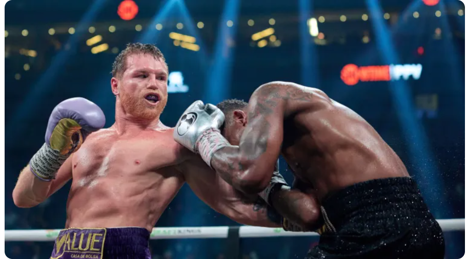

El boxeo forma parte importante de la cultura deportiva mexicana debido a su impacto social y al reconocimiento que ha generado en diferentes generaciones. Este deporte representa valores como la disciplina, la perseverancia y el esfuerzo constante.
En muchas comunidades, los gimnasios de boxeo funcionan como espacios de formación personal para jóvenes interesados en desarrollar habilidades físicas y fortalecer valores positivos relacionados con el respeto y la responsabilidad.
Gracias a la popularidad y tradición del boxeo, México continúa siendo considerado uno de los países más importantes dentro de esta disciplina a nivel internacional.